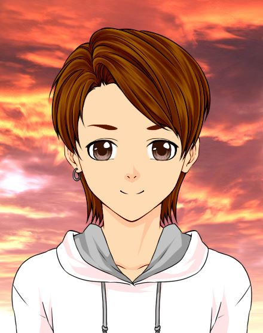

Ficha de personajes: Urian Olson.

Urian Olson, Guardián de los Cuatro Elementos.
Datos personales.
- Nombre y apellido.
- Urian Olson.
- Alias.
- Guardián de los Cuatro Elementos.
- Fecha de nacimiento.
- 11/01
- Elemento.
- Agua, Fuego, Aire y Tierra.
- Nación.
- Nación de las Corrientes.
- Altura.
- 178cm
Personalidad.
- Puntos buenos.
- Bondadoso. Bueno. Agradable. Afable. Dulce.
- Puntos malos.
- Inseguro.
- Ambiciones.
- Poder convertirse en escritor.
Aficiones y gustos.
- Color preferido.
- Morado.
- Comida preferida.
- Sushi.
- Aficiones.
- Novelas románticas. Cocinar.
Habilidades principales.
Elemento básico.
- Bajo.
- Rayo combinado.
- Medio.
- Esferas explosivas.
- Fuerte.
- Terremoto.
- Protección.
- Muro de piedra.
Sellos básicos.
- Protección.
- Búnquer.
- Curación.
- Sanación simple.
- Ataque.
- Rayo Total.
Especiales.
- Principal.
- Unión de elementos.
- Guardián de los Cuatro Elementos.
- Pegaso Blanco.
Físicos.
- Tiro con arco.
- Muy bueno.
- Esgrima.
- Aceptable.
Estadísticas.
- Elemento.
- 817/1000
- Sellos.
- 521/1000
- Físico.
- 567/1000
Cursos estudiados.
| Curso |
Años |
Rango de edad |
Obligatorio o no obligatorio |
| Básico |
4 |
12-15 |
Obligatorio |
| Medio |
3 |
16-18 |
Obligatorio |
| Superior |
3 |
19-21 |
No obligatorio |
| Especialización |
2 |
22-24 |
No obligatorio |
Notas globales.
| Curso |
Media |
| Básico |
Notable bajo. |
| Medio |
Bien. |
| Superior |
Notable alto. |
| Especialización |
Excelente. |